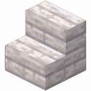
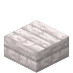
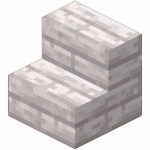
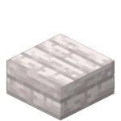
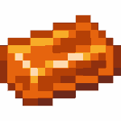
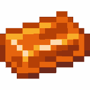

Blocs
Sommaire
Coeur de Creaking
Le coeur de Creaking
Un bloc de résine utilisé avec deux bois de chêne pâle pour faire un cœur de creaking.
Le Coeur de Creaking, est un bloc spécial qu'on trouve naturellement dans les chênes pâles du Jardin pâle. Ce bloc unique produit des particules et des sons mystérieux quand il est activé. Pour invoquer des grinceurs, il doit être placé entre deux bûches de chêne pâle alignées dans la même direction. En cas d'attaque, il peut produire de la résine, et sa destruction avec l'enchantement Silk Touch rapporte entre 20 et 24 points d'expérience. La destruction du coeur entraîne la disparition de tous les grinceurs connectés.
Oeilchidées
Une Oeilchidée fermée
Une Oeilchidée ouverte
Les oeilchidées (ou Eyeblossom) sont des fleurs spéciales qu'on trouve uniquement dans le Jardin pâle. Ces fleurs fascinantes ont un cycle jour/nuit particulier : elles sont fermées pendant la journée et elles s'ouvrent la nuit en émettant une douce lumière. Elles possèdent la capacité de se synchroniser entre elles pour s'ouvrir simultanément. On peut en extraire des teintures grises ou oranges, et les utiliser dans des soupes suspectes, même si celles-ci causent des effets secondaires comme la cécité et la nausée.
Mousse pâle et tapis de mousse pâle
Bloc de mousse pâle
Tapis de mousse pâle
La mousse pâle est un bloc naturel du Jardin pâle récoltable avec une pioche en bois. Elle peut être transformée en tapis de mousse pâle, plus fins et teintables avec des oeilchidées. La mousse pâle se propage avec de la poudre d'os sur les blocs compatibles, tandis que les tapis se développent horizontalement sur les surfaces adjacentes. Ces blocs apportent une touche naturelle et mystérieuse parfaite pour la décoration de vos constructions.
Feuilles et bois de chêne pâle

Le bois de chêne pâle
Les feuilles de chêne pâle
Les feuilles de chêne pâle se distinguent par leurs particules grises flottantes, créant une atmosphère mystérieuse. Le bois de chêne pâle est un matériau polyvalent qui peut être travaillé en différentes formes : planches, escaliers, dalles et pancartes suspendues. Pour plus de possibilités créatives, ce bois existe aussi en version écorcée, permettant aux joueurs de varier leurs constructions.
Planche de chêne pâle
Trappe de chêne pâle
Portillon de chêne pâle
 



Plaque de pression de chêne pâle
Escalier de chêne pâle
Dalle de chêne pâle
Amas de résine et bloc de résine
La résine, obtenue à partir des coeurs de grinceur, permet de créer des blocs de résine. Ces derniers, en étant durcis, peuvent être transformés en briques de résine. Ils servent ensuite à fabriquer différents éléments de construction comme des dalles, des escaliers, des murets et des versions sculptées. Ces matériaux offrent des possibilités décoratives uniques avec leur texture particulière.
 

Un amas de résine
Un bloc de résine
Un lingot de résine